FAIL
2026-09-28 11:13:50 · позиций 16 · FAIL 6 · аномалий вне деталей 3 · невязка фидуциалов 0.001141245309195724 мм · ECC 0.9708
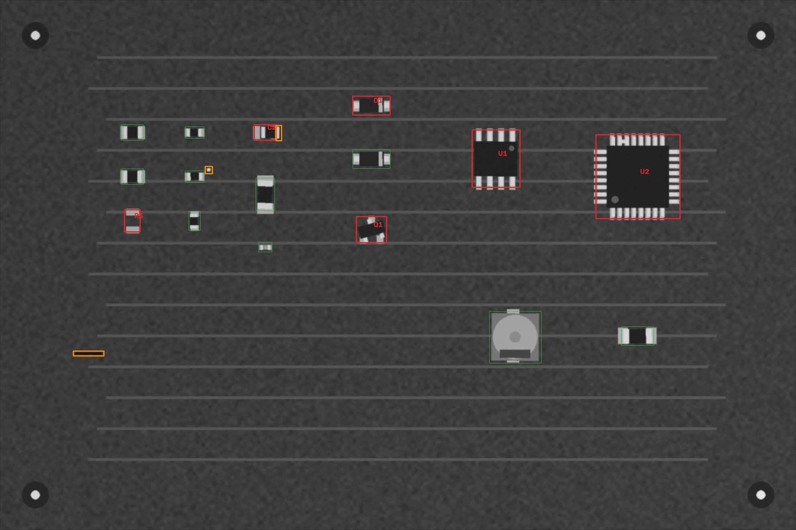
Кроп: живая плата (выровнена) | эталон (жёлтое — метка полярности,
синее — место метки при 180°) | карта отклонений σ.
MISSING — корпус не найден; MISMATCH — на месте не то, что в эталоне (голые площадки, другая деталь,
повреждение); POLARITY — развёрнута на 180° / метка не там; SHIFT / ROTATED — вне допуска;
ANOMALY — локальное отклонение от golden (мост, шарик, лишний припой, посторонний предмет).
| C2 1u · 0805 | FAIL SHIFT ANOMALY | 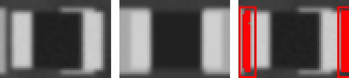 ncc 0.926 · ncc_thr 0.6 · mad 3.0 · mad_thr 9.8 · dx_mm 0.545 · dy_mm 0.0 · dtheta_deg -0.0 · anomaly_px 243 |
| D1 SS14 · SOD-123 · SS14 | FAIL POLARITY | 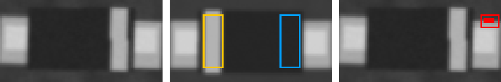 ncc 0.823 · ncc_thr 0.6 · ncc_180 0.974 · mad 8.6 · mad_thr 7.9 · mad_180 2.5 · dx_mm 0.045 · dy_mm 0.045 · dtheta_deg 2 · anomaly_px 18 |
| Q1 BSS138 · SOT-23 · BSS138 | FAIL ROTATED ANOMALY | 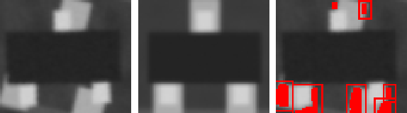 ncc 0.899 · ncc_thr 0.6 · ncc_180 0.743 · mad 1.1 · mad_thr 7.2 · mad_180 8.6 · dx_mm 0.091 · dy_mm 0.0 · dtheta_deg 14 · anomaly_px 341 |
| R3 4k7 · 0805 | FAIL MISMATCH | 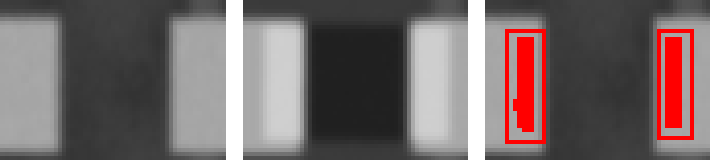 ncc 0.975 · ncc_thr 0.6 · mad 30.7 · mad_thr 9.3 · dx_mm 0.0 · dy_mm 0.0 · dtheta_deg -0.0 · anomaly_px 182 |
| U1 LM358 · SOIC-8 · LM358DR | FAIL POLARITY | 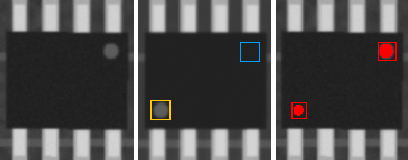 ncc 0.884 · ncc_thr 0.6 · ncc_180 0.954 · mad 3.2 · mad_thr 7.1 · mad_180 1.1 · mark_ncc 0.003 · mark_ncc_180 0.992 · dx_mm 0.0 · dy_mm 0.045 · dtheta_deg -0.0 · anomaly_px 197 |
| U2 STM8S003 · TQFP-32 · STM8S003F3P6 | FAIL ANOMALY | 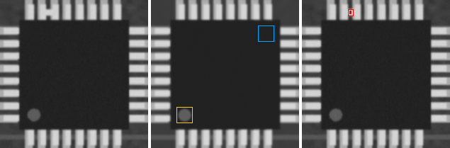 ncc 0.993 · ncc_thr 0.6 · ncc_180 0.906 · mad 1.0 · mad_thr 7.1 · mad_180 2.5 · mark_ncc 0.99 · mark_ncc_180 -0.107 · dx_mm 0.0 · dy_mm 0.0 · dtheta_deg -0.0 · anomaly_px 15 |
| C1 100n · 0603 | PASS | 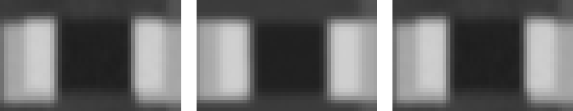 ncc 0.992 · ncc_thr 0.6 · mad 4.4 · mad_thr 11.5 · dx_mm -0.045 · dy_mm -0.045 · dtheta_deg -0.0 · anomaly_px 0 |
| C3 10u · 1206 | PASS | 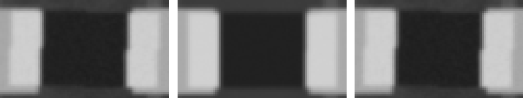 ncc 0.992 · ncc_thr 0.6 · mad 4.1 · mad_thr 8.0 · dx_mm 0.0 · dy_mm 0.0 · dtheta_deg -0.0 · anomaly_px 0 |
| C4 100n · 0402 | PASS | ncc 0.986 · ncc_thr 0.6 · mad 3.3 · mad_thr 9.8 · dx_mm 0.0 · dy_mm 0.0 · dtheta_deg -0.0 · anomaly_px 0 |
| C5 47u · CP_Elec_5x5.8 | PASS | 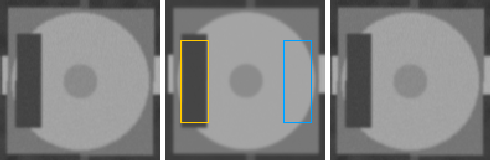 ncc 0.99 · ncc_thr 0.6 · ncc_180 0.671 · mad 2.6 · mad_thr 7.7 · mad_180 18.3 · mark_ncc 0.934 · mark_ncc_180 -0.132 · dx_mm 0.045 · dy_mm -0.045 · dtheta_deg -0.0 · anomaly_px 0 |
| D2 1N4148W · SOD-123 · SS14 | PASS | 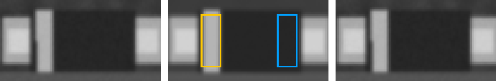 ncc 0.979 · ncc_thr 0.6 · ncc_180 0.821 · mad 2.5 · mad_thr 7.6 · mad_180 10.3 · mark_ncc 0.942 · mark_ncc_180 0.109 · dx_mm -0.045 · dy_mm 0.0 · dtheta_deg -0.0 · anomaly_px 0 |
| R1 10k · 0805 | PASS | 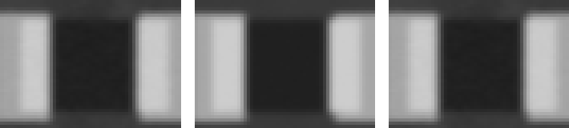 ncc 0.996 · ncc_thr 0.6 · mad 4.5 · mad_thr 9.9 · dx_mm 0.0 · dy_mm 0.0 · dtheta_deg -0.0 · anomaly_px 0 |
| R2 10k · 0805 | PASS | 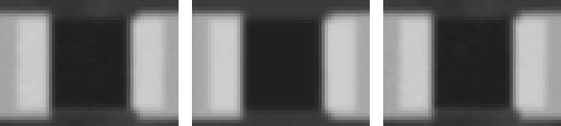 ncc 0.997 · ncc_thr 0.6 · mad 3.8 · mad_thr 8.6 · dx_mm 0.0 · dy_mm 0.0 · dtheta_deg -0.0 · anomaly_px 0 |
| R4 1k · 0603 | PASS | 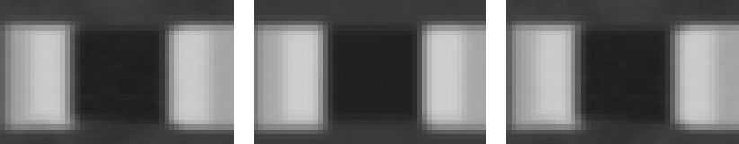 ncc 0.997 · ncc_thr 0.6 · mad 3.6 · mad_thr 9.5 · dx_mm -0.045 · dy_mm 0.0 · dtheta_deg -0.0 · anomaly_px 0 |
| R5 1k · 0603 | PASS | 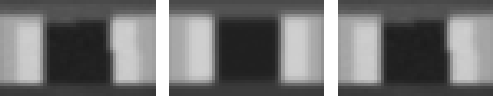 ncc 0.982 · ncc_thr 0.6 · mad 8.7 · mad_thr 10.6 · dx_mm 0.0 · dy_mm 0.0 · dtheta_deg -0.0 · anomaly_px 0 |
| R6 0R · 1206 | PASS | 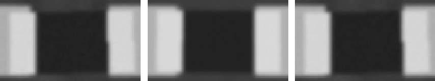 ncc 0.994 · ncc_thr 0.6 · mad 4.0 · mad_thr 8.5 · dx_mm 0.0 · dy_mm 0.0 · dtheta_deg -0.0 · anomaly_px 0 |